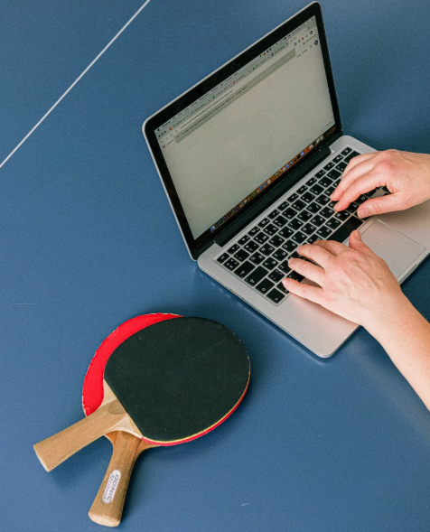
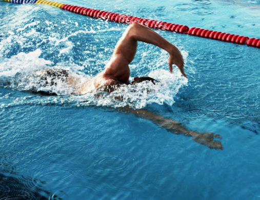

Chào các bạn,
Lập trình nhiều năm, mắt đã cận đến 3.5 độ, phản xạ chậm đi rất nhiều. Tôi quyết định đi tập bóng bàn. Đây là môn thể thao không va chạm, ít chấn thương, không mạo hiểm, không đòi hỏi năng khiếu gì đặc biệt, cầm vợt là là đỡ và vụt trả. Tuy nhiên để đánh đúng kỹ thuật và chơi giỏi thì cần sự khổ luyện + đúng phương pháp.

Buổi đầu tiên, giảng viên phải sửa động tác đứng, phải khom lưng thay vì đừng thẳng lưng như Aikido hay duỗi người càng dài càng tốt. Khuỷ tay thì không được nhấc cao ngược lại với bơi xải, khuỷ tay nhấc cao trước khi cắm xuống nước. Có quá nhiều sự khác biệt khiến tôi rất lo lắng và hồi hộp. Có một điều tôi học hỏi được từ bơi đường trường đó là khi bạn hồi hộp, nhịp thở gấp gáp, bạn sẽ chóng mệt và cơ bắp sẽ căng cứng. Do đó việc đầu tiên tôi chú ý không phải là cố gắng gò người theo động tác thầy dạy mà là hít thở đều đặn, thanh thản khi chơi, vụt hỏng cũng kể, vụt trượt không tiếc nuối. Cứ 3 nhịp vụt, giảng viên lại nhắc "Nào khom lưng xuống, nào vai thả lỏng ra, khuỷ tay hạ xuống tý nữa, cánh tay đưa ra phía trước, đừng lắc cổ tay mạnh quá, đừng đung đưa người nhiều quá, đừng úp vợt, nào hãy đưa vợt lên phía trước...". Tóm lại là rất nhiều điều chỉnh, tôi chỉ tiếp thu được 1 vài góp ý thôi, còn lại cứ đánh đi đã.
Sau 2 buổi tập tay phải, tôi chuyển sang tập tay trái. Tay trái rõ ràng không khoẻ như tay phải, tuy nhiên khi tôi không đặt nặng áp lực thành tích, tay trái trở nên uyển chuyển, khéo léo không kém gì tay phải. Thậm chí tôi tập liên tục 60 phút với tay trái còn thấy thoải mái hơn. Sau 4 buổi tập bóng bàn, không những phản xạ tốt hơn, việc tập đánh cả bằng 2 tay giúp tôi bơi sải tốt hơn. Tôi cảm giác đã gần tập được kỹ thuật bơi Total Immersion. Đây là một kỹ thuật bơi đường trường, ít tốn sức, giảm lực cản tối đa của nước lên cơ thể, cho tốc độ bơi khá tốt. Một giờ đồng hồ, tôi có thể bơi được 2.7km và bơi ngon lành trong 2 tiếng.

Từ những trải nghiệm khi chơi thể thao, tôi thấy rằng việc học lập trình hay học nấu ăn, học đàn cũng tương tự. Khi bạn quá hồi hộp, lo lắng, không có sự thanh thản, bạn sẽ rất mệt mỏi, cảm giác kiệt sức thậm chí hoảng sợ. Việc học không còn tý thú vị gì cả, nó là cực hình tra tấn. Khi đó, chỉ cần một lý do rất nhỏ, bạn có thể lấy làm cớ để nghỉ học, thực chất để giảm áp lực căng thẳng.
Nhiều bạn khi mới đến học Techmaster đặt ra cho mình một mục tiêu quá lớn, nhưng lại không dành nhiều thời gian để luyện tập. Trước mỗi giờ học thực hành lab, chỉ cần xem lại bài trước đó khoảng 30 phút bạn sẽ thấy bộ não được khởi động tốt hơn. Một số không thực sự hiểu bài, nhưng ngại không nói ra, không trao đổi với giảng viên, điều này cũng khiến giảng viên không biết lực học của bạn ra sao. Khi tập bóng bàn, tôi nói thẳng thắn với huấn luyện viện, tôi chỉ cần tập ít động tác, thanh niên trẻ tập 1 tháng, tôi sẽ sẵn sàng tập trong 2 tháng hoặc hơn thế nữa.
Đã học, thì đừng sợ mắc lỗi. Đã học là phải vui. Luôn giữ nhịp thở đều đặn, tâm hồn thanh thản, xác định việc học là lâu dài không thể chỉ trong vài chục buổi đã giỏi ngay.